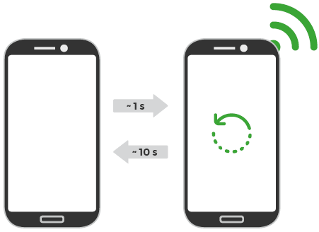
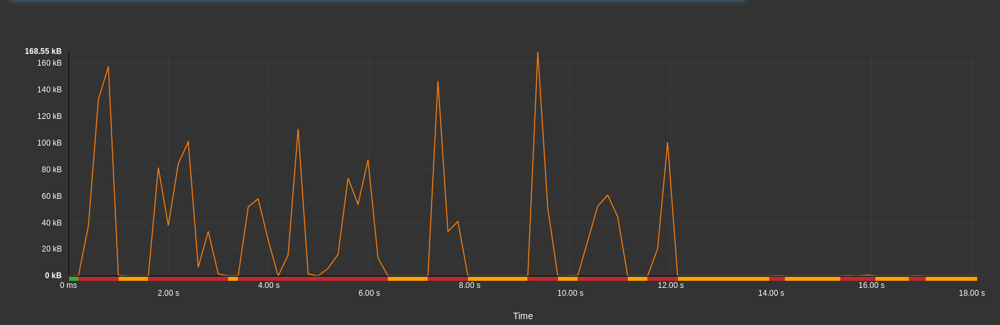

When it comes to the use of network in mobility, there’s two kinds of applications: those which keep the battery loaded, and those which dig.
In which category does your app fall?
It’s not a secret for anyone, an application transmitting a lot of data consumes more energy than a more frugal application.
In this article, we will see that besides the volume of data, the way the exchanges happen has a key role on the energetic impact of your app.
Once upon a time in the Wi-fi
In order to better understand why controlling the volume of data is not enough, let’s focus first on how a network cell works (Wi-fi, 3G, 4G, etc.).
Two basic states are available for all types of network cells: on and off.
On top of that and depending on the technology, intermediary states are used to finely adjust the consumption to the data transfer need.
As a network cell does not wake up instantly (about one second), it stays awake a few seconds after any transfer in order to be as responsive as possible. In the case of Wi-fi, this transition time equals 10s.

The Good, the Bad and the Ugly
To illustrate issues relating to these transition times, let’s study three simple examples from measures performed on actual websites. The graphics represent the quantity of exchanged data over time.
NB: Smartphones being complex systems, some events outside the control of your application might use the network cell of your device, thus interfering with your own data transfers.
Our tests are performed in a strictly controlled environment and we have ensured that the following measures were not disrupted by such external events.

Let’s start by the ideal case. Data is transmitted in a clustered pattern, then the page is entirely loaded.
In this case, the network cell is continuously active for a short period of time (red interval). The cell enters into standby (green interval) after the statutory waiting period of 10s (orange interval).
10/10, would browse again.

The second example obviously implies larger amounts of data, but we can see that data is not transferred continuously. During the short intervals without any transmission, the network cell stays awake, waiting for a potential resumption of data transfers.
Between the first and the last exchanged bytes, the WiFi cell is left on while half of this time is spent waiting.

Lastly, the last example is almost too good to be true: after initial data transfers, the network cell switches to waiting mode, as in the first example. However, just before entering into standby, a few kB are transmitted, resetting the countdown to 10s.
In this example, the last percent of exchanged data is responsible for almost half of the network cell’s energy consumption.
For a few milliampere-hours more
Some advice to avoid these problems:
- Keep the volume of data exchanged to a minimum. It seems obvious, but it does not hurt anyone to mention it.
- Avoid data transfers once the initial load is completed.
- Delegate the management of data exchanges to Android using for instance GCM Network Manager.
More generally, the Android documentation on network usage is a very comprehensive guide on this subject.
In order to observe network activity, you can use one of the following tools:
- ARO
- Android Device Monitor
- Battery Historian, recently mentionned on this blog
- GREENSPECTOR, naturally!
Closing credits
In addition to the volume of data, it is also important to pay particular attention to the way data is actually transferred by your application or your website.
Latency periods between transfers, however short, may have a considerable impact on energy consumption. So implement your transmissions with diligence and don’t let the network cell rule the roost!